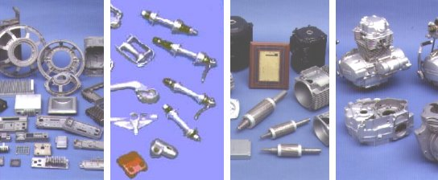

|
Süleyman
Keykubat
Kalýp Öðretmeni
Ocak 2005
Giriþ:
Döküm parçalarý daha iyi ve seri dökmek için daimi kullanýlan
çelik kalýplar geliþtirilmiþtir. Düþük derecede ergiyen demir
olmayan metal ve alaþýmlarýn daimi çelik kalýplarda bir basýnç
altýnda biçimlendirilmesine " Basýnçlý Döküm " adý
verilir (3).
Basýnçlý
döküm kalýplama metoduyla genellikle alüminyum, bakýr, çinko,
magnezyum, kalay, kurþun ve benzeri alaþýmlardan döküm kalýplama
iþlemi yapýlmaktadýr (3).

Basýnçlý metal dökümle imal edilmiþ çeþitli parçalar
Alaþýmlarýn
Seçimi
Basýnçlý
döküm yöntemiyle üretilen parçalarýn kullaným alanlarýnýn
geniþliði buralardaki fiziki ve kimyasal þartlara uyum saðlayabilecek
alaþýmlarýn geliþtirilmesini saðlamýþtýr. Bunun sonucu olarak
ortaya çok deðiþik tipte alaþým çýkmýþtýr (2).
Bununla
birlikte bir kullaným alaný için son derece uygun olan bir
alaþým baþka bir iþte uygunluk saðlayamayabilir. Örnek olarak,
insanlarýn sürekli temas halinde bulunduðu kapý kolu gibi
bir parçada estetik, buna baðlý olarak ta kaplanabilme özelliði
vb. ön planda iken kuvvet iletiminde kullanýlan bir diþlide
esas problem malzemenin dayanýmýdýr (3).
Bu
yüzden tasarýmcý baþlýca basýnçlý döküm alaþýmlarý hakkýnda
bilgi sahibi olmalýdýr. Ayrýca tasarýmcý malzeme seçiminde
aþaðýdaki hususlarý göz önünde bulundurmalýdýr. Bunlar (3);
1-
Ýmalatý yapýlan parçanýn dayanýmý, sertlik ve þekil deðiþtirme
gibi mekanik özellikler
2- Yaþlanmanýn mekanik ve fiziksel özellikler üzerindeki etkisi
3- Dökülebilirlik, akýþkanlýk, soðuma çekmesi vb. yönlerden
basýnçlý döküm kalýplamaya adapte edilebilirliði
4- Isý etkisiyle dayanýmda meydana gelen deðiþiklikler
5- Talaþ bitirme iþlemlerinde kullanýlabilirliði
6- Parlatma boyama kaplama vb. bitirme iþlemlerinde uygunluðu
7- Korozyona karþý dayaným
8- Kullaným yerine göre parça aðýrlýðý
9- Kullanýlan yere göre parça maliyeti
10- Kimyasal etkilere ve aþýnmaya karþý dayanýklýlýðý
Basýnçlý
Döküm Alaþýmlarý Tipleri
Basýnçlý döküm yoluyla üretilen parçalar pek çok tipte ve
çok geniþ kullanma sahasý olan elemanlardýr. Böyle olmakla
beraber, bir uygulama için tamamiyla uygun olan bir alaþým
diðer biri için çok uygunsuz olabilir (1,2).
Yüksek
Basýnçlý Döküm Alaþým Çeþitleri
- Alüminyum
basýnçlý dökümdeki kullanýlýþý gittikçe artmaktadýr. Halen
bütün basýnçlý dökümlerin %30 kadarý alüminyumdur. Bu miktarda
parçanýn alüminyumdan dökülme sebepleri; Aðýrlýklarýnýn
az olmasý, akma sýnýrýnýn istenilenden çok iyi, termik ve
elektrik iletkenlik ve yüzey parlaklýðýný kaybetme dayanýklýlýðýnýn
iyi olmasý, fiyat bakýmýndan ekonomik olmasý ve son iþlemleri
ticari ve ekonomik bakýmdan tatminkâr olmasýdýr (1).
- Magnezyum
alaþýmlarý, daha çok hafifliðin istendiði yerlerde kullanýlýr.
Uygulama alanlarý; portatif yazý makinesi, büro makinelerinin
muhafaza ve gövdeleri, fotoðraf makineleri, optik aletler,
portatif aletler ve benzeri avadanlýk parçalarý magnezyum
alaþýmlarýndan yapýlýrlar. Alternatif veya baþkaca hareket
yapan tekstil sanayi parçalarý ile küçük taþýma ve paketleme
makineleri parçalarý magnezyumdan basýnçlý döküm yoluyla
üretilir (1).
- Basýnçlý
döküm yoluyla üretilen bakýr alaþýmlarýnýn belli
baþlý özellikleri yüksek mukavemet, saðlamlýk, korozyon
ve aþýnmaya karþý rezistanslarýdýr. Özellikle hassasiyet
isteyen, þekli karýþýk, dayanýklý ve ekonomik olmasý istenen
iþlerde bu alaþýmlarýn basýnçlý dökümleri çok kullanýlýr.
Otomobil diþlileri, vites diþli deðiþtirme çatallarý, fren
parçalarý, þok amortisör parçalarý, çeþitli endüstriyel
birleþtirme parçalarý, ev ve mutfak eþyalarý gibi yerlerde
kullanýlýrlar (1).
Düþük
Basýnçlý Döküm Alaþýmlarý Çeþitleri
- Çinko
alaþýmlarý, bütün basýnçlý dökümlerin aðýrlýk itibari
ile yaklaþýk olarak %60'ýný teþkil eder. Çünkü kolay ve
süratli dökümü dolayýsýyla ekonomik sonuç verir. Düþük döküm
sýcaklýðý dolayýsýyla bu alaþýmlarda yakýt fiyatý, kalýp
fiyatý ve kalýp iþletme masraflarý düþüktür. Mekanik özellikleri
iyi, iþlenebilmeleri tatminkâr ve bitirme iþleri ekonomiktir
(1).
- Kalay
ve alaþýmlarýnýn basýnçlý dökümleri bir zamanlar özellikle
otomobil ana yataklarýnda kullanýlmaktaydý. Bu kullanýlýþ
büyük ölçüde azaltýldý ve bugün yerine baþka gereçler kullanýlmaktadýr.
Kalay alaþýmlarýndan basýnçlý döküm yolu ile üretilen parçalar
daha çok korozyon mukavemeti isteyen sodalý su avadanlýklarýnda,
süt makinelerinde, þurup pompalarýnda, diþçi ve týbbi operasyon
aletlerinde kullanýlýr (1).
-
Kurþun alaþýmlarý genellikle düþük fiyat ve korozyona
dayanýklý madenin gerektiði, dayaným, sertlik ve diðer mekanik
özelliklerin önemli olmadýðý yerlerde kullanýlýr. Basýnçlý
döküm yolu ile üretilen parçalar, kuvvetli mineral asitlerine
dayanýklýlýk isteyen, yangýn söndürme aleti parçalarý, batarya
ve kimyasal aparatlar gibi yerlerde kullanýlýrlar (1).
Basýnçlý Döküm, talaþ kaldýrma iþçiliðinin ve malzeme sarfiyatýnýn
az olmasý, üretim sayýsýnýn fazlalýðý, simetrik olmayan karmaþýk
biçimdeki kalýplama iþlemlerinin kolaylýðý nedeniyle endüstri
alanýnda çok kullanýlmaktadýr.
Basýnçlý döküm parçasýnýn tasarýmýnda dikkat edilecek hususlar
arasýnda; en yüksek kaliteli parçayý verecek en ekonomik döküm
alaþýmýný bulmaktýr. Bu nedenle alaþýmýn seçiminde dikkat
edilmesi gereken özellikleri sýralayacak olursak:
Dayaným,
sertlik gibi mekanik özellikler,
- Isýl
iþlemlerin özelliklere etkileri ve boyutsal kararlýlýk,
- Alaþýmýn
basýnçlý döküm metoduna uygunluðu, dökülebilirliði, akýcýlýðý,
- Düþük
ve yüksek sýcaklýklardaki dayanýmý,
- Cilalama,
parlatýlma, kaplanma, boyanma ve diðer yüzey bitirme iþlemlerine
uygunluðu,
- Korozyon
direnci,
- Aðýrlýðý
ve maliyeti.
Basýnçlý Dökümün, endüstrideki saðladýðý faydalarý sýralayacak
olursak:
- Simetrik
olmayan deðiþik biçim ve boyutlardaki parçalar kolay kalýplanabilir,
- Basýnçlý
döküm kalýplama metoduyla üretilen parçalarýn talaþ kaldýrma
iþçiliði yok denecek kadar azdýr.
Bu
faydalarý çoðaltmamýz mümkündür... Bunun
yanýnda basýnçlý dökümün zararlý yönleri de bulunmaktadýr.
Bunlarýn bazýlarý þöyle sýralanabilir;
- Kalýplanacak
parça boyutlarý ve aðýrlýðý sýnýrlýdýr,
- Kalýplama
boþluðuna uygun olmayan giriþ kanalý seçimi sonucu tahliye
edilemeyen hava basýncý, kalýplanan parçanýn hatalý veya
yarým çýkmasýna sebep olur,
- Ergime
sýcaklýðý yüksek madenlerin kalýplama iþleminde kullanýlan
kalýplarýn ömrü kýsadýr.
Bütün
bunlara raðmen basýnçlý döküm kalýplama metoduyla üretilen
parçalarýn dayanýmý yüksek olmasý sebebiyle endüstride çok
kullanýlan kalýplama metotlarýndan biridir.
KAYNAKLAR
1
- DOEHLER H.H., Çeviren: BAYVAS M. Þevki, Basýnçlý Döküm,
Ankara Erkek Teknik Yüksek Öðretmen Okulu Matbaasý, Ankara,
1974.
2 - ÇÝÐDEMOÐLU Macit, Basýnçlý Döküm, Cilt 1, Makine Mühendisleri
Odasý, Ankara, 1972.
3 - J. Kluz, Çeviren: Gýyasettin Erci, Plastik ve Metal Döküm
Kalýplarý, Milli Eðitim Bakanlýðý Etüt ve Programlama Dairesi
Yayýnlarý No.72.
4 - W. H. DENNÝS, Çeviren: Doç. D.H.Erman TULGAR, Demirden
Gayrý Metaller Metalürjisi, Kýsým I, ÝTÜ Kimya - Metalürji
Fakültesi Ofset Atölyesi, 1987.
5 - Doç. Dr. Narin ÜNAL, Malzeme Bilgisi (Alaþýmlarýn Ýç Yapýsý
ve Özellikleri), Antalya, 1989.
Ýlgili
rapor:
Basýnçlý
metal döküm makine ve kalýplarý |